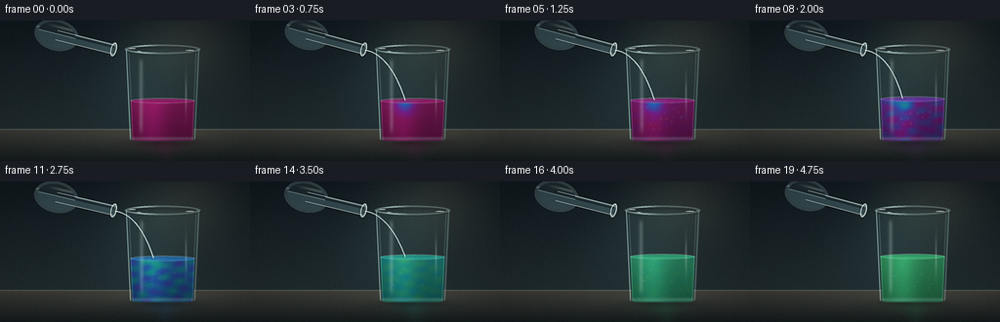
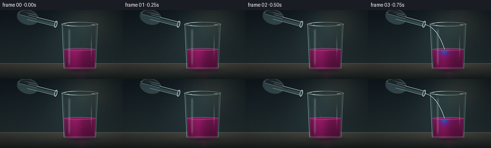

CODING AGENTS AS PIXEL WORLD MODELS
traex/DeepSeek-V4.1-Flash · material_0032
点击播放 · 原生 RGB 像素
逐轮保存的候选
回放视频、检查图与代码变化。
每份候选均可单独播放。实际图片检查记录在下方工具轨迹中。
候选 01播放与检查图
点击播放 · 原生 RGB 像素


展开代码变化
--- 上一保存版本
+++ 本次保存版本
@@ -0,0 +1,415 @@
+from pathlib import Path
+
+import numpy as np
+from PIL import Image, ImageDraw, ImageFilter
+
+import artifact_io
+
+
+W, H = 256, 144
+FPS = 4.0
+N_FRAMES = 20
+SUPERSAMPLE = 4
+HW, HH = W * SUPERSAMPLE, H * SUPERSAMPLE
+
+
+def smoothstep(edge0, edge1, value):
+ t = np.clip((value - edge0) / (edge1 - edge0), 0.0, 1.0)
+ return t * t * (3.0 - 2.0 * t)
+
+
+def mix_color(a, b, amount):
+ amount = np.asarray(amount, dtype=np.float32)
+ if amount.ndim == 2:
+ amount = amount[..., None]
+ return a * (1.0 - amount) + b * amount
+
+
+def blend(canvas, color, alpha):
+ alpha = np.clip(np.asarray(alpha, dtype=np.float32), 0.0, 1.0)[..., None]
+ return canvas * (1.0 - alpha) + np.asarray(color, dtype=np.float32) * alpha
+
+
+def ellipse_mask(cx, cy, rx, ry, angle=0.0):
+ ca, sa = np.cos(angle), np.sin(angle)
+ dx, dy = X - cx, Y - cy
+ lx = ca * dx + sa * dy
+ ly = -sa * dx + ca * dy
+ return ((lx / rx) ** 2 + (ly / ry) ** 2 <= 1.0).astype(np.float32)
+
+
+def blur_mask(mask, radius):
+ image = Image.fromarray(np.uint8(np.clip(mask, 0.0, 1.0) * 255.0), "L")
+ return np.asarray(image.filter(ImageFilter.GaussianBlur(radius * SUPERSAMPLE)), dtype=np.float32) / 255.0
+
+
+def line_rgba(points, width, color, opacity=1.0):
+ layer = Image.new("RGBA", (HW, HH), (0, 0, 0, 0))
+ draw = ImageDraw.Draw(layer)
+ scaled = [(float(x) * SUPERSAMPLE, float(y) * SUPERSAMPLE) for x, y in points]
+ rgba = tuple(int(np.clip(c, 0.0, 1.0) * 255.0) for c in color) + (
+ int(np.clip(opacity, 0.0, 1.0) * 255.0),
+ )
+ draw.line(scaled, fill=rgba, width=max(1, int(round(width * SUPERSAMPLE))), joint="curve")
+ return np.asarray(layer, dtype=np.float32) / 255.0
+
+
+def composite_rgba(canvas, rgba):
+ alpha = rgba[..., 3]
+ return canvas * (1.0 - alpha[..., None]) + rgba[..., :3] * alpha[..., None]
+
+
+def bezier(p0, p1, p2, p3, count=72):
+ s = np.linspace(0.0, 1.0, count)[:, None]
+ p0, p1, p2, p3 = map(np.asarray, (p0, p1, p2, p3))
+ points = (
+ ((1.0 - s) ** 3) * p0
+ + 3.0 * ((1.0 - s) ** 2) * s * p1
+ + 3.0 * (1.0 - s) * (s**2) * p2
+ + (s**3) * p3
+ )
+ return points
+
+
+def liquid_palette(mix):
+ stops = np.array([0.0, 0.24, 0.52, 0.76, 1.0], dtype=np.float32)
+ colors = np.array(
+ [
+ [0.47, 0.055, 0.31],
+ [0.39, 0.075, 0.46],
+ [0.10, 0.27, 0.57],
+ [0.045, 0.46, 0.48],
+ [0.15, 0.54, 0.34],
+ ],
+ dtype=np.float32,
+ )
+ mix = np.clip(mix, 0.0, 1.0)
+ result = np.empty(mix.shape + (3,), dtype=np.float32)
+ for channel in range(3):
+ result[..., channel] = np.interp(mix, stops, colors[:, channel])
+ return result
+
+
+Xg, Yg = np.meshgrid(
+ (np.arange(HW, dtype=np.float32) + 0.5) / SUPERSAMPLE,
+ (np.arange(HH, dtype=np.float32) + 0.5) / SUPERSAMPLE,
+)
+X = Xg
+Y = Yg
+
+
+def background(stage_mix):
+ top = np.array([0.055, 0.085, 0.105], dtype=np.float32)
+ bottom = np.array([0.12, 0.16, 0.17], dtype=np.float32)
+ wall_t = np.clip(Y / 113.0, 0.0, 1.0)[..., None]
+ canvas = top * (1.0 - wall_t) + bottom * wall_t
+
+ # A soft pool of warm light keeps the glass separated from the cool wall.
+ light = np.exp(-(((X - 191.0) / 72.0) ** 2 + ((Y - 20.0) / 62.0) ** 2) * 1.7)
+ canvas += light[..., None] * np.array([0.085, 0.075, 0.052], dtype=np.float32)
+ cool_light = np.exp(-(((X - 143.0) / 64.0) ** 2 + ((Y - 65.0) / 74.0) ** 2) * 1.9)
+ canvas += cool_light[..., None] * np.array([0.025, 0.045, 0.048], dtype=np.float32)
+
+ # Fine wall grain, softened by the final downsample.
+ wall_grain = (
+ np.sin(X * 1.77 + Y * 0.31)
+ + np.sin(X * 0.43 - Y * 2.11 + 1.7)
+ + np.sin(X * 4.31 + Y * 1.13)
+ ) / 3.0
+ canvas += (wall_grain * 0.006)[..., None]
+
+ table_top = 111.5
+ table = smoothstep(table_top - 0.6, table_top + 0.6, Y)
+ table_t = np.clip((Y - table_top) / (H - table_top), 0.0, 1.0)[..., None]
+ table_color = np.array([0.23, 0.225, 0.205], dtype=np.float32) * (1.0 - table_t) + np.array(
+ [0.075, 0.10, 0.10], dtype=np.float32
+ ) * table_t
+ sheen = np.exp(-(((X - 160.0) / 93.0) ** 2 + ((Y - 119.0) / 16.0) ** 2) * 2.1)
+ table_color += sheen[..., None] * np.array([0.045, 0.043, 0.036], dtype=np.float32)
+ canvas = blend(canvas, table_color, table)
+
+ # Bench edge and the colored caustic cast by the glass.
+ edge = np.exp(-((Y - table_top) / 0.55) ** 2) * 0.38
+ canvas = blend(canvas, np.array([0.54, 0.58, 0.53], dtype=np.float32), edge)
+ stage_color = liquid_palette(np.array(stage_mix, dtype=np.float32))
+ cast = np.exp(-(((X - 166.0) / 38.0) ** 2 + ((Y - 126.0) / 14.0) ** 2) * 2.6) * table
+ canvas = blend(canvas, stage_color * 0.82, cast * 0.24)
+
+ contact = np.exp(-(((X - 168.0) / 44.0) ** 2 + ((Y - 125.0) / 6.0) ** 2) * 2.0) * table
+ canvas *= 1.0 - 0.32 * contact[..., None]
+
+ # Long, broken reflection below the glass.
+ reflection = np.exp(-((X - 170.0) / 8.0) ** 2) * smoothstep(112.0, 124.0, Y)
+ reflection *= (0.45 + 0.55 * np.sin(Y * 1.8 + 0.6) ** 2) * 0.09
+ canvas = blend(canvas, stage_color + 0.08, reflection)
+ return canvas
+
+
+def render_bottle(theta, pour_amount):
+ sx, sy = 118.0, 30.0
+ dx, dy = X - sx, Y - sy
+ ca, sa = np.cos(theta), np.sin(theta)
+ along = ca * dx + sa * dy
+ perp = -sa * dx + ca * dy
+
+ body_outer = (((along + 62.0) / 23.0) ** 2 + (perp / 16.0) ** 2 <= 1.0).astype(np.float32)
+ neck_outer = ((along >= -63.0) & (along <= -1.0) & (np.abs(perp) <= 5.2)).astype(np.float32)
+ rim_outer = (((along + 1.6) / 3.2) ** 2 + (perp / 7.4) ** 2 <= 1.0).astype(np.float32)
+ outer = np.maximum(np.maximum(body_outer, neck_outer), rim_outer)
+ body_inner = (((along + 62.0) / 19.7) ** 2 + (perp / 13.2) ** 2 <= 1.0).astype(np.float32)
+ neck_inner = ((along >= -62.0) & (along <= -1.8) & (np.abs(perp) <= 3.5)).astype(np.float32)
+ rim_inner = (((along + 1.7) / 2.0) ** 2 + (perp / 5.9) ** 2 <= 1.0).astype(np.float32)
+ inner = np.maximum(body_inner, neck_inner)
+ wall = np.clip(outer - inner, 0.0, 1.0)
+
+ tint = np.array([0.56, 0.77, 0.80], dtype=np.float32)
+ liquid = np.array([0.57, 0.82, 0.84], dtype=np.float32)
+ bottle = np.zeros((HH, HW, 3), dtype=np.float32)
+ bottle[:] = tint
+ return outer, inner, wall, body_inner.astype(np.float32), neck_inner.astype(np.float32), rim_outer, rim_inner, along, perp
+
+
+def draw_bottle(canvas, theta, pour_amount):
+ outer, inner, wall, body_inner, neck_inner, rim_outer, rim_inner, along, perp = render_bottle(
+ theta, pour_amount
+ )
+ glass_tint = np.array([0.62, 0.82, 0.83], dtype=np.float32)
+ canvas = blend(canvas, glass_tint, outer * 0.075)
+
+ # The ammonia is almost colorless, with a cool glassy edge.
+ liquid_mask = np.clip(body_inner + neck_inner, 0.0, 1.0) * (perp > -1.2)
+ canvas = blend(canvas, np.array([0.57, 0.83, 0.86], dtype=np.float32), liquid_mask * 0.17)
+ surface = body_inner * np.exp(-((perp + 1.3) / 0.55) ** 2) * 0.34
+ canvas = blend(canvas, np.array([0.83, 0.96, 0.94], dtype=np.float32), surface)
+
+ # Bright walls and a crisp lip.
+ wall_highlight = wall * (0.28 + 0.44 * np.exp(-((perp + 4.0) / 1.1) ** 2))
+ canvas = blend(canvas, np.array([0.78, 0.93, 0.92], dtype=np.float32), wall_highlight * 0.45)
+ neck_line = np.exp(-((np.abs(perp) - 4.8) / 0.42) ** 2) * (along > -62.0) * (along < -1.0)
+ canvas = blend(canvas, np.array([0.91, 0.98, 0.96], dtype=np.float32), neck_line * 0.52)
+ rim = np.clip(rim_outer - rim_inner, 0.0, 1.0)
+ canvas = blend(canvas, np.array([0.94, 0.99, 0.97], dtype=np.float32), rim * 0.65)
+
+ # A narrow glare travels along the upper shoulder.
+ shoulder_glare = body_inner * np.exp(-((perp + 8.5) / 1.3) ** 2) * smoothstep(-78.0, -55.0, along)
+ canvas = blend(canvas, np.array([0.95, 1.0, 0.98], dtype=np.float32), shoulder_glare * 0.22)
+ return canvas
+
+
+def draw_stream(canvas, t, pour_amount, impact_x, level):
+ if pour_amount < 0.02:
+ return canvas
+ wobble = 0.65 * np.sin(t * 5.4)
+ points = bezier(
+ (117.8, 30.4),
+ (127.5 + wobble, 31.2),
+ (145.0 - wobble, 40.0),
+ (impact_x, level - 0.6),
+ count=78,
+ )
+ # A faint halo plus a brilliant center make the thin stream readable at 256 px.
+ glow = line_rgba(points, 2.8, np.array([0.66, 0.89, 0.92]), 0.18 * pour_amount)
+ glow[:, :, :3] = np.asarray(
+ Image.fromarray(np.uint8(glow[:, :, :3] * 255.0)).filter(ImageFilter.GaussianBlur(2.4 * SUPERSAMPLE)),
+ dtype=np.float32,
+ ) / 255.0
+ canvas = composite_rgba(canvas, glow)
+ stream = line_rgba(points, 0.9, np.array([0.88, 0.98, 0.98]), 0.72 * pour_amount)
+ canvas = composite_rgba(canvas, stream)
+ core = line_rgba(points, 0.32, np.array([1.0, 1.0, 0.99]), 0.88 * pour_amount)
+ canvas = composite_rgba(canvas, core)
+ return canvas
+
+
+def glass_geometry():
+ cx = 166.5
+ top = 29.5
+ bottom = 124.5
+ yn = np.clip((Y - top) / (bottom - top), 0.0, 1.0)
+ halfw = 38.2 - 4.3 * yn
+ dx = X - cx
+ bottom_round = np.clip((Y - (bottom - 6.0)) / 6.0, 0.0, 1.0)
+ rounded = (np.abs(dx) / halfw) ** 4 + bottom_round**4 <= 1.0
+ body = (Y >= top) & (Y <= bottom) & (np.abs(dx) <= halfw) & ((Y < bottom - 6.0) | rounded)
+ body = body.astype(np.float32)
+ inner_halfw = halfw - 2.8
+ inner_rounded = (np.abs(dx) / np.maximum(inner_halfw, 0.1)) ** 4 + (
+ np.clip((Y - (bottom - 4.3)) / 4.3, 0.0, 1.0)
+ ) ** 4 <= 1.0
+ inner = (
+ (Y >= top + 4.0)
+ & (Y <= bottom - 1.0)
+ & (np.abs(dx) <= inner_halfw)
+ & ((Y < bottom - 4.3) | inner_rounded)
+ ).astype(np.float32)
+ return cx, top, bottom, halfw, inner_halfw, body, inner
+
+
+def draw_glass_and_juice(canvas, t, stage_mix, level, pour_amount, impact_x):
+ cx, top, bottom, halfw, inner_halfw, body, inner = glass_geometry()
+
+ # Back wall tint.
+ canvas = blend(canvas, np.array([0.43, 0.67, 0.67], dtype=np.float32), body * 0.055)
+
+ yn = np.clip((Y - level) / (bottom - level), 0.0, 1.0)
+ fluid_noise = (
+ np.sin((X - cx) * 0.25 + (Y - level) * 0.37 - t * 2.35 + np.sin(Y * 0.18 + t * 0.7))
+ + np.sin((Y - level) * 0.53 - (X - cx) * 0.14 + t * 1.55)
+ + 0.55 * np.sin((X - cx) * 0.41 + (Y - level) * 0.19 + t * 1.1)
+ ) / 2.55
+ eddy = 0.5 + 0.5 * fluid_noise
+ mix_field = stage_mix + (eddy - 0.5) * 0.30 * np.sin(np.pi * stage_mix)
+ impact = np.exp(-(((X - impact_x) / 10.5) ** 2 + ((Y - level) / 16.0) ** 2))
+ mix_field += impact * (1.0 - stage_mix) * pour_amount * 0.62
+ trailing = np.exp(-(((X - (cx - 9.0)) / 12.5) ** 2 + ((Y - (level + 19.0)) / 18.0) ** 2))
+ mix_field -= trailing * (1.0 - stage_mix) * 0.13
+ mix_field = np.clip(mix_field, 0.0, 1.0)
+ liquid_color = liquid_palette(mix_field)
+
+ # Cylindrical shading and a brighter top surface.
+ lateral = np.clip((X - (cx - 32.0)) / 64.0, 0.0, 1.0)
+ cylinder = 0.78 + 0.34 * np.exp(-((lateral - 0.34) / 0.23) ** 2)
+ vertical = 1.08 - 0.28 * yn
+ liquid_color *= (cylinder * vertical)[..., None]
+ liquid_color += np.array([0.035, 0.025, 0.025], dtype=np.float32) * (1.0 - yn[..., None])
+
+ liquid_mask = inner * (Y >= level)
+ canvas = blend(canvas, liquid_color, liquid_mask * 0.965)
+
+ surface_y = level
+ surface_half = 35.0 - 4.0 * np.clip((surface_y - top) / (bottom - top), 0.0, 1.0)
+ surface = ellipse_mask(cx, surface_y, surface_half, 2.5)
+ surface_color = liquid_palette(np.array(stage_mix, dtype=np.float32)) * 1.25
+ surface_color = np.clip(surface_color + 0.035, 0.0, 1.0)
+ canvas = blend(canvas, surface_color, surface * 0.72)
+ meniscus = np.clip(
+ ellipse_mask(cx, surface_y - 0.2, surface_half + 0.4, 3.0)
+ - ellipse_mask(cx, surface_y, surface_half - 0.9, 2.2),
+ 0.0,
+ 1.0,
+ )
+ canvas = blend(canvas, np.array([0.72, 0.91, 0.83], dtype=np.float32), meniscus * 0.24)
+
+ # Concentric impact rings.
+ if pour_amount > 0.05:
+ for k in range(3):
+ age = (t * 1.65 + k * 0.31) % 1.0
+ rx = 4.0 + age * 12.0
+ ry = 0.55 + age * 2.4
+ ring = np.abs(((X - impact_x) / rx) ** 2 + ((Y - level) / ry) ** 2 - 1.0)
+ ring = np.exp(-((ring / 0.16) ** 2))
+ canvas = blend(
+ canvas,
+ np.array([0.80, 0.96, 0.91], dtype=np.float32),
+ ring * (1.0 - age) * 0.21 * pour_amount,
+ )
+
+ # Small rising bubbles begin once the stream reaches the liquid.
+ bubble_start = smoothstep(0.75, 1.2, t)
+ if bubble_start > 0.0:
+ for i in range(19):
+ phase = (i * 0.137 + t * (0.16 + 0.015 * (i % 5))) % 1.0
+ bx = cx + (i % 6 - 2.5) * 7.0 + 1.6 * np.sin(phase * 8.0 + i * 1.7)
+ by = bottom - 7.0 - phase * (bottom - 10.0 - level)
+ radius = 0.55 + 0.55 * ((i * 7) % 5) / 4.0
+ rr = np.sqrt(((X - bx) / radius) ** 2 + ((Y - by) / (radius * 0.92)) ** 2)
+ ring = np.exp(-(((rr - 1.0) / 0.20) ** 2))
+ fade = np.sin(np.pi * phase) * bubble_start
+ canvas = blend(canvas, np.array([0.72, 0.95, 0.91], dtype=np.float32), ring * fade * 0.18)
+
+ # Side walls, bottom, rim, and a broad moving reflection.
+ edge_left = np.exp(-((X - (cx - halfw + 1.1)) / 0.62) ** 2) * body
+ edge_right = np.exp(-((X - (cx + halfw - 1.1)) / 0.70) ** 2) * body
+ canvas = blend(canvas, np.array([0.78, 0.93, 0.91], dtype=np.float32), edge_left * 0.50)
+ canvas = blend(canvas, np.array([0.66, 0.83, 0.82], dtype=np.float32), edge_right * 0.34)
+
+ inner_edge = np.exp(-((np.abs(X - cx) - inner_halfw + 0.8) / 0.55) ** 2) * inner
+ canvas = blend(canvas, np.array([0.74, 0.91, 0.90], dtype=np.float32), inner_edge * 0.17)
+
+ base = inner * np.exp(-((Y - (bottom - 3.4)) / 1.8) ** 2)
+ canvas = blend(canvas, np.array([0.73, 0.88, 0.86], dtype=np.float32), base * 0.20)
+
+ rim_outer = ellipse_mask(cx, top, 39.1, 5.0)
+ rim_inner = ellipse_mask(cx, top, 34.8, 3.2)
+ rim = np.clip(rim_outer - rim_inner, 0.0, 1.0)
+ rim_light = 0.36 + 0.55 * np.exp(-((X - (cx - 20.0)) / 12.0) ** 2)
+ canvas = blend(canvas, np.array([0.82, 0.94, 0.92], dtype=np.float32), rim * rim_light * 0.66)
+
+ glare_x = cx - 22.0 + 0.8 * np.sin(t * 0.8)
+ glare = np.exp(-((X - glare_x) / 2.1) ** 2) * smoothstep(top + 7.0, top + 15.0, Y)
+ glare *= 1.0 - smoothstep(bottom - 18.0, bottom - 4.0, Y)
+ glare *= body
+ canvas = blend(canvas, np.array([0.91, 0.99, 0.97], dtype=np.float32), glare * 0.20)
+
+ glint = np.exp(-(((X - (cx + 24.0)) / 1.0) ** 2 + ((Y - 76.0) / 18.0) ** 2))
+ glint *= body
+ canvas = blend(canvas, np.array([0.95, 1.0, 0.98], dtype=np.float32), glint * 0.22)
+
+ # Tiny specular breaks at the rim make the glass read as a round vessel.
+ for sx, sy, rx, ry in (
+ (cx - 31.0, top - 0.8, 3.8, 0.55),
+ (cx + 28.0, top + 1.1, 4.5, 0.50),
+ (cx - 24.0, top + 2.1, 2.2, 0.35),
+ ):
+ canvas = blend(
+ canvas,
+ np.array([0.98, 1.0, 0.98], dtype=np.float32),
+ ellipse_mask(sx, sy, rx, ry) * 0.62,
+ )
+ return canvas
+
+
+def render_frame(index):
+ t = index / FPS
+ stage_mix = float(smoothstep(0.48, 4.55, t))
+ level = 82.4 - 5.4 * float(smoothstep(0.65, 4.25, t))
+ pour_amount = float(smoothstep(0.46, 0.76, t) * (1.0 - smoothstep(3.42, 3.88, t)))
+ impact_x = 157.5 + 1.4 * np.sin(t * 2.2)
+
+ canvas = background(stage_mix)
+
+ # Very faint atmospheric haze around the glass mouth.
+ haze = np.exp(-(((X - 166.0) / 49.0) ** 2 + ((Y - 35.0) / 24.0) ** 2) * 2.0)
+ canvas += haze[..., None] * np.array([0.012, 0.020, 0.019], dtype=np.float32)
+
+ theta = 0.245 + 0.018 * np.sin(t * 1.6)
+ canvas = draw_bottle(canvas, theta, pour_amount)
+ canvas = draw_glass_and_juice(canvas, t, stage_mix, level, pour_amount, impact_x)
+ canvas = draw_stream(canvas, t, pour_amount, impact_x, level)
+
+ # A restrained bloom gives the stream and rim a wet highlight.
+ bright = np.clip((canvas - 0.76) / 0.24, 0.0, 1.0)
+ bloom = np.max(bright, axis=2)
+ bloom = np.asarray(
+ Image.fromarray(np.uint8(bloom * 255.0)).filter(ImageFilter.GaussianBlur(3.2 * SUPERSAMPLE)),
+ dtype=np.float32,
+ ) / 255.0
+ canvas += bloom[..., None] * np.array([0.11, 0.14, 0.12], dtype=np.float32)
+
+ # Gentle vignette and cool-shadow / warm-highlight grade.
+ nx = (X - W * 0.5) / (W * 0.5)
+ ny = (Y - H * 0.5) / (H * 0.5)
+ vignette = 1.0 - 0.14 * np.clip(np.sqrt(nx * nx * 0.72 + ny * ny * 0.55), 0.0, 1.0) ** 1.8
+ canvas *= vignette[..., None]
+ luminance = np.sum(canvas * np.array([0.2126, 0.7152, 0.0722], dtype=np.float32), axis=2)
+ canvas += (1.0 - luminance)[..., None] * np.array([0.004, 0.009, 0.011], dtype=np.float32)
+ canvas += luminance[..., None] * np.array([0.007, 0.004, 0.0], dtype=np.float32)
+
+ image = Image.fromarray(np.uint8(np.clip(canvas, 0.0, 1.0) * 255.0 + 0.5), "RGB")
+ image = image.resize((W, H), Image.Resampling.LANCZOS)
+ image = image.filter(ImageFilter.UnsharpMask(radius=0.7, percent=58, threshold=2))
+ final = np.asarray(image, dtype=np.int16)
+
+ rng = np.random.default_rng(3107 + index)
+ grain = rng.normal(0.0, 0.85, (H, W, 1))
+ final = np.clip(final + np.rint(grain), 0, 255).astype(np.uint8)
+ return final
+
+
+def main():
+ frames = np.stack([render_frame(index) for index in range(N_FRAMES)])
+ artifact_io.save(frames, Path(__file__).resolve().parent)
+
+
+if __name__ == "__main__":
+ main()
可观测工具轨迹
实际执行的命令与返回图片。
命令 1exit 0
/bin/bash -c "pwd && rg --files -g 'prompt.txt' -g 'GENERATION_RULES.md' -g 'task_spec.json' -g '"'!**/.git/**'"'"
命令 2exit 0
/bin/bash -c "git status --short && find . -maxdepth 2 -type f -printf '%p\\n' | sort | head -200"
命令 3exit 0
/bin/bash -c 'cat prompt.txt'
命令 4exit 0
/bin/bash -c 'cat GENERATION_RULES.md'
命令 5exit 0
/bin/bash -c 'cat task_spec.json'
命令 6exit 0
/bin/bash -c "sed -n '1,260p' artifact_io.py && printf '\\n--- player ---\\n' && sed -n '1,220p' player_template.html"
命令 7exit 1
/bin/bash -c 'python generate.py'
命令 8exit 1
/bin/bash -c 'python generate.py'
命令 9exit 1
/bin/bash -c 'python generate.py'
命令 10exit 0
/bin/bash -c 'python generate.py'
命令 11exit 127
/bin/bash -c "ls -lh inspection.png transition_check.png pixels.npz index.html frames/00.png frames/19.png && file frames/00.png && python - <<'PY' from PIL import Image for p in ['inspection.png','transition_check.png','frames/00.png','frames/10.png','frames/19.png']: im=Image.open(p); print(p, im.size, im.mode) PY"
命令 12exit 0
/bin/bash -c 'command -v chafa || true; command -v viu || true; command -v jp2 || true; command -v ffmpeg || true; command -v convert || true; command -v magick || true'
命令 13exit 0
/bin/bash -c "python - <<'PY' from PIL import Image import numpy as np for p in ['inspection.png','transition_check.png','frames/00.png','frames/10.png','frames/19.png']: im=Image.open(p); a=np.asarray(im) print(p, im.size, im.mode, 'mean', np.round(a.reshape(-1,a.shape[-1]).mean(0),1), 'minmax', (a.min(),a.max())) PY"
命令 14exit 0
/bin/bash -c "python - <<'PY'
from PIL import Image, ImageDraw
import numpy as np
frames=[]
for i in [0,4,8,12,16,19]:
a=np.asarray(Image.open(f'frames/{i:02d}.png')).astype(np.float32)
frames.append(a)
# tile enlarged frames at 2x for inspection
scale=2
out=Image.new('RGB',(256*3*scale,144*2*scale),(20,20,20))
for j,a in enumerate(frames):
im=Image.fromarray(a.astype(np.uint8)).resize((256*scale,144*scale),Image.Resampling.NEAREST)
out.paste(im,((j%3)*256*scale,(j//3)*144*scale))
out.save('review_frames.png')
# print coarse ANSI truecolor (30x16) for frame 10 and 19
for idx in [0,10,19]:
a=np.asarray(Image.open(f'frames/{idx:02d}.png').resize((48,27),Image.Resampling.BILINEAR))
print('\\nFRAME',idx)
for row in a[::2]:
print(''.join(f'\\x1b[48;2;{r};{g};{b}m ' for r,g,b in row)+'\\x1b[0m')
PY"命令 15exit 0
/bin/bash -c "python - <<'PY'
from PIL import Image, ImageOps, ImageEnhance
import numpy as np
chars=' .:-=+*#%@'
for idx in [0,10,19]:
im=Image.open(f'frames/{idx:02d}.png').convert('L')
im=ImageEnhance.Contrast(im).enhance(1.8).resize((64,36),Image.Resampling.BILINEAR)
a=np.asarray(im)
print('\\nFRAME',idx)
for row in a:
print(''.join(chars[min(len(chars)-1,int(v)*(len(chars)-1)//256)] for v in row))
PY"命令 16exit 0
/bin/bash -c "python - <<'PY'
from PIL import Image
import numpy as np
pts={'glass_top':(166,60),'glass_mid':(166,85),'glass_low':(166,112),'bottle':(65,25),'stream':(138,50),'table':(210,128)}
for i in range(20):
a=np.asarray(Image.open(f'frames/{i:02d}.png'))
print(f'{i:02d}', ' '.join(f'{k}={tuple(a[y,x])}' for k,(x,y) in pts.items()))
PY"命令 17exit 0
/bin/bash -c "python - <<'PY'
from PIL import Image
import numpy as np
im=np.asarray(Image.open('frames/10.png'))
# grid report of brightest stream candidates around y 35..55 and x 100..155
for y in range(34,57,3):
vals=[]
for x in range(95,160,4):
r,g,b=map(int,im[y,x]);
if r+g+b>180: vals.append((x,(r,g,b)))
print(y, vals)
PY"命令 18exit 0
/bin/bash -c "python - <<'PY'
from PIL import Image
im=Image.open('review_frames.png')
im.resize((1536,576)).save('review_frames_large.png')
print(im.size)
PY"命令 19exit 0
/bin/bash -c "python - <<'PY'
from PIL import Image
import numpy as np
for i in [0,10,19]:
a=np.asarray(Image.open(f'frames/{i:02d}.png')).astype(float)
# detect foreground saturation / chroma
chroma=a.max(2)-a.min(2)
print(i, 'mean', a.mean((0,1)).round(1), 'p50/p90 chroma', np.percentile(chroma,[50,90]).round(1), 'glass bbox', end=' ')
m=(chroma>18)&(np.indices(chroma.shape)[1]>110)&(np.indices(chroma.shape)[1]<225)
ys,xs=np.where(m); print((xs.min(),ys.min(),xs.max(),ys.max()) if len(xs) else None)
PY"命令 20exit 0
/bin/bash -c "python - <<'PY'
from PIL import Image, ImageOps, ImageEnhance
import numpy as np
chars=' .:-=+*#%@'
for idx in [0,5,10,15,19]:
im=Image.open(f'frames/{idx:02d}.png').convert('L').crop((20,0,240,144))
im=ImageEnhance.Contrast(im).enhance(2.5).resize((88,48),Image.Resampling.BILINEAR)
a=np.asarray(im)
print('\\nFRAME',idx)
for row in a[::2]:
print(''.join(chars[min(len(chars)-1,int(v)*(len(chars)-1)//256)] for v in row))
PY"命令 21exit 0
/bin/bash -c "python - <<'PY'
from PIL import Image
import numpy as np
for i in [0,5,10,15,19]:
a=np.asarray(Image.open(f'frames/{i:02d}.png')).astype(int)
roi=a[28:110,145:190]
chrom=roi.max(2)-roi.min(2)
print(i,'max RGB',roi.reshape(-1,3).max(0),'bright p99',np.percentile(roi.max(2),99),'chroma p99',np.percentile(chrom,99))
PY"命令 22exit 0
/bin/bash -c "python - <<'PY'
from PIL import Image, ImageDraw, ImageFont
import numpy as np
# Create a diagnostic contact sheet of frames 0..19 at 2x with labels.
out=Image.new('RGB',(256*5,144*4),(12,12,12))
d=ImageDraw.Draw(out)
for i in range(20):
im=Image.open(f'frames/{i:02d}.png')
x=(i%5)*256;y=(i//5)*144
out.paste(im,(x,y))
d.rectangle((x,y,x+32,y+10),fill=(0,0,0))
d.text((x+2,y),f'{i}',fill=(255,255,255))
out.resize((1280,576),Image.Resampling.NEAREST).save('all_frames_contact.png')
PY"命令 23exit 0
/bin/bash -c "python - <<'PY'
from PIL import Image
import numpy as np
# Print coarse color names per sample frame based on central liquid crop.
for i in range(20):
a=np.asarray(Image.open(f'frames/{i:02d}.png')).astype(float)
roi=a[88:120,148:186]
med=np.median(roi.reshape(-1,3),axis=0)
# HSL hue
import colorsys
r,g,b=med/255
h,s,v=colorsys.rgb_to_hsv(r,g,b)
print(f'{i:02d}: rgb={med.round().astype(int)} hsv=({h*360:.0f},{s:.2f},{v:.2f})')
PY"命令 24exit 0
/bin/bash -c "python - <<'PY'
from PIL import Image, ImageDraw
import numpy as np
# Save candidate crops for precise edge review.
for i in [0,10,19]:
im=Image.open(f'frames/{i:02d}.png')
im.crop((35,0,220,144)).resize((740,576),Image.Resampling.NEAREST).save(f'crop_{i:02d}.png')
# quantify consecutive frame difference and exact duplicates
prev=None
for i in range(20):
a=np.asarray(Image.open(f'frames/{i:02d}.png')).astype(np.int16)
if prev is not None:
print(f'{i-1:02d}->{i:02d}: MAE={np.abs(a-prev).mean():.2f}, changed={(a"'!=prev).any(2).mean()*100:.1f}%'"')
prev=a
PY"命令 25exit 0
/bin/bash -c 'command -v chromium || command -v chromium-browser || command -v google-chrome || command -v playwright || true'
命令 26exit 0
/bin/bash -c "python - <<'PY'
import json, re
from pathlib import Path
import numpy as np
from PIL import Image
spec=json.loads(Path('task_spec.json').read_text())
z=np.load('pixels.npz')['pixels']
print('pixels', z.shape, z.dtype, 'spec', (spec['frames'],spec['height'],spec['width']))
print('frame count', len(list(Path('frames').glob('*.png'))))
print('html bytes', Path('index.html').stat().st_size, 'contains player', '__pixelReady' in Path('index.html').read_text())
# Validate that unpacking packed pixels equals the PNGs.
for i in [0,10,19]:
rgb=np.stack([(z[:,:,i]>>16)&255,(z[:,:,i]>>8)&255,z[:,:,i]&255],axis=2).astype(np.uint8)
png=np.asarray(Image.open(f'frames/{i:02d}.png'))
print(i, 'packed/png exact', np.array_equal(rgb,png), 'mean', np.round(rgb.mean((0,1)),1))
PY"命令 27exit 0
/bin/bash -c 'unlink review_frames.png'
命令 28exit 0
/bin/bash -c 'unlink review_frames_large.png'
命令 29exit 0
/bin/bash -c 'unlink all_frames_contact.png'
命令 30exit 0
/bin/bash -c 'unlink crop_00.png'
命令 31exit 0
/bin/bash -c 'unlink crop_10.png'
命令 32exit 0
/bin/bash -c 'unlink crop_19.png'
命令 33exit 0
/bin/bash -c 'python -m py_compile generate.py'
命令 34exit 0
/bin/bash -c "ls -lh generate.py task_spec.json prompt.txt pixels.npz index.html inspection.png transition_check.png frames/00.png frames/19.png && find . -maxdepth 2 -type f -printf '%p\\n' | sort"
保存候选 1 份；完成命令 34 次；可验证图片返回 0 张。原始 API 响应与完整日志保留在本地。